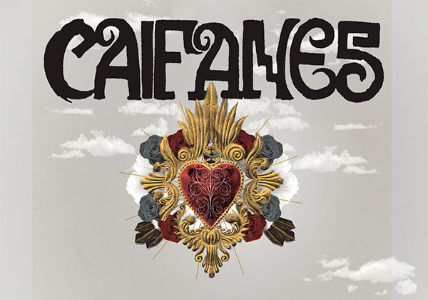
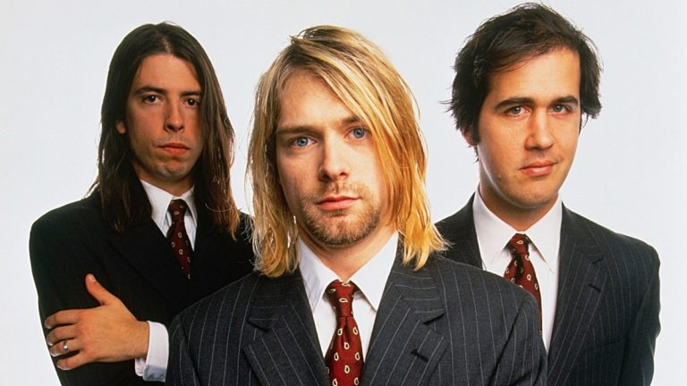

ROCK .CURIOSIDADES
El rock es un género musical que surgió a mediados del siglo XX en Estados Unidos. Su nacimiento es el resultado de una mezcla explosiva de diversos géneros como el Rhythm and Blues (R&B), el Country, el Gospel y el Blues.
Orígenes y Evolución
A mediados de los años 50, artistas como Chuck Berry, Little Richard y Elvis Presley popularizaron un sonido basado en la guitarra eléctrica y ritmos acelerados que conectaron de inmediato con la juventud.

Bandas Destacadas
1. Caifanes
Banda mexicana formada en 1987. Fusionó post-punk y new wave con elementos culturales mexicanos.
- Género: Rock alternativo / Post-punk
- Canciones: La Célula Que Explota

2. Nirvana
Banda estadounidense liderada por Kurt Cobain que popularizó el grunge en los años 90.
- Género: Grunge / Rock alternativo
- Canciones: Come As You Are Smells Like Teen Spirit

Otras Bandas Populares
-
💜 the TheBeatles
💜 Pink Floyd
💜 Soda Stereo
💜 Led Zeppelin
💜 Pearl Jam
"El rock no es solo música, es una actitud."
Ir al Formulario